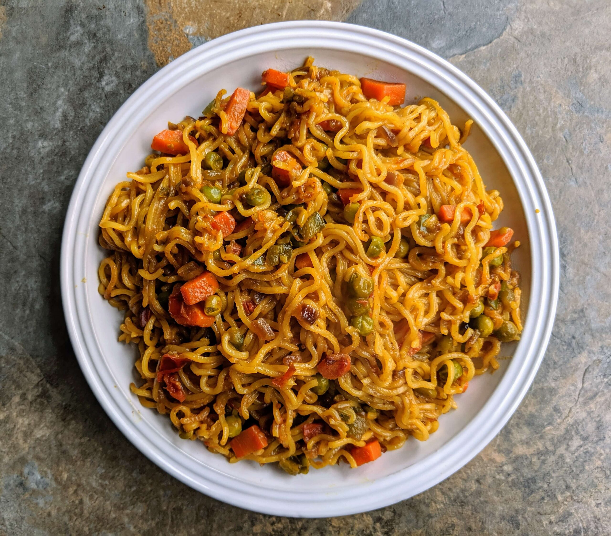

Maggi
Home

Maggi noodles are a popular brand of instant noodles produced by Nestlé.
Known for their quick preparation and distinctive masala seasoning, they
are a staple comfort food in many households, especially in India,
Southeast Asia, and parts of Africa. Each packet typically contains a
block of dried noodles and a seasoning sachet, which is often a blend
of spices, salt, and flavor enhancers. Maggi noodles can be cooked in
just a few minutes by boiling them in water with the seasoning mix,
making them a convenient and affordable meal option.
Ingredients
- Wheat Flour
- Edible Vegetable Oil (Palm Oil)
- Iodized Salt
- Spices & Condiments
- Flavor Enhancers
Steps
- Boil Water
- Add Noodles
- Mix in the Masala Seasoning
- Cook for 2-3 Minutes
- Serve & Enjoy